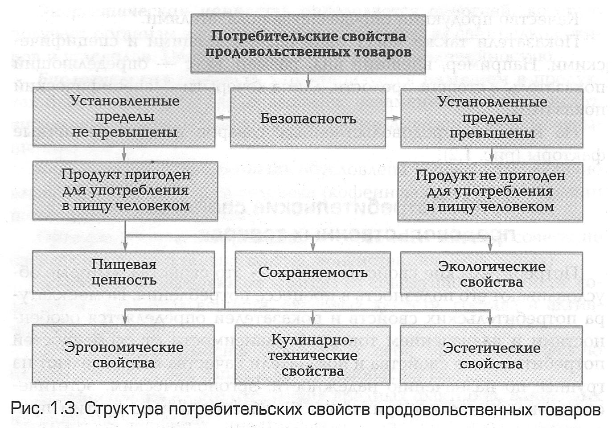

1.1.1. Потребительские свойства продовольственных товаров
Потребительские свойства товара — это свойства, которые обусловливают его полезность в процессе потребления. Номенклатура потребительских свойств и показателей определяется особенностями и назначением товара. В зависимости от особенностей потребительские свойства и показатели качества подразделяют на группы: по назначению надежности, эргономическим, эстетическим, экологическим признаком безопасности и по другим признакам.
К основным потребительским характеристикам продуктов питания относится их пищевая, энергетическая и биологическая ценность.
Для того чтобы изучить потребительские свойства продовольственных товаров, необходимо проанализировать их химический состав и свойства входящих в них химических веществ.
По химическому составу и функциональному назначению органические и неорганические вещества, входящие в состав продовольственных товаров, подразделяют на энергетические, пластические (вода, белки, жиры и др.) и объемно-функциональные (витамины, азотистые вещества и ферменты). На основании данных о химическом составе продуктов и норм потребления пищевых продуктов определяют ассортимент продуктов, который в каждом отдельном случае может обеспечивать потребность организма в пищевых веществах.
Полезность продуктов питания определяется такими основными потребительскими свойствами, как пищевая, биологическая, физиологическая и энергетическая ценность.
Пищевая ценность продукта характеризует всю полноту полезных свойств, т. е. его доброкачественность, усвояемость, содержание питательных и биологически активных веществ.
Биологическая ценность продуктов характеризуется наличием витаминов, макро- и микроэлементов, незаменимых аминокислот и полиненасыщенных жирных кислот, которые не синтезируются в организме и не могут быть заменены другими пищевыми веществами.
Способность продуктов оказывать влияние на нервную, сердечно-сосудистую, пищеварительную систему человека характеризует физиологическую ценность продукта.
Наличие жиров, белков, углеводов и их усвояемость характеризуют энергетическую ценность продуктов питания.
Важнейшим потребительским свойством продовольственных товаров является их безопасность. При характеристике безопасности продовольственных товаров оценивают их химическую и санитарно-гигиеническую безопасность (табл. 1.1).
| Вид безопасности | Показатели безопасности |
|---|---|
| Химическая | Отсутствие: тяжелых металлов (мышьяка, ртути, кадмия, свинца, меди, цинка, железа, олова), пестицидов, радионуклидов, антибиотиков и гормональных препаратов (в молочных и мясных товарах), нитратов(в плодоовощных товарах), нитритов (в колбасных изделиях и копченостях), метилового спирта (в вино-водочных изделиях) и других токсичных веществ |
| Санитарно-гигиеническая | Отсутствие: патогенных (болезнетворных) микро-организмов (бактерий группы кишечной палочки, сальмонелл, стафилококков и др.), зараженности и загрязненности вредителями (насекомыми, паразитами, грызунами). Наличие и степень развития различных биоповреждений: микробиологические (плесневение, гниение и др.), биологические (нарушение целостности продукта) |
Показатели безопасности продовольственных товаров проверяют при проведении обязательной сертификации.
Характеристику пищевой ценности, сохраняемости и других потребительских свойств продовольственных товаров необходимо давать только после подтверждения их безопасности.

▲ НАВЕРХ ▲
► К следующему подразделу 1.1.2